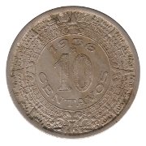

Ten Centavos
First Series
Large Type
1913-M
Small Type
1919-M
1933-M
Second Series
Third Series
 1936-M
1937-M
1938-M
1940-M
1942-M
1945-M
1946-M
Fourth Series
1955-Mo
1956-Mo
1957-Mo
1959-Mo
1967-Mo
Fifth Series
1974-Mo
1975-Mo
1976-Mo
 1977-Mo Low Relief
1977-Mo Low Relief
1977-Mo High Relief
1978-Mo High Relief
1979-Mo
1980-Mo
Back to Mexico
Back to Home